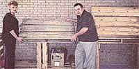
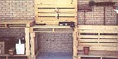
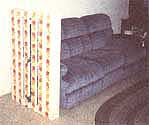
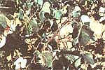
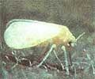

BITS AND PIECES
The most inexpensive lumber you'll ever find.
They dwell behind loading docks, litter shipping yards, and proliferate in stock rooms around the world. They represent millions of tons of hardwood each year, and have a service life of perhaps a few weeks or months. Each year in the United States alone, there are about 460 million wooden pallets manufactured, over half of which are discarded after the first use. Most people simply don't realize that this otherwise titanic waste could be one of our eases-and certainly least expensive-sources for building lumber.
The wood used for pallets comprises 10 percent of the lumber and 50 percent of the hard wood cut down each year in the United States. It is estimated that the amount of wood used for pallets is equivalent to the amount of wood used in the frames of 300,000 average-size American homes. Although the number produced in most foreign countries does not match U.S. production, pallets made in Africa, Asia, and South America often contain endangered tropical woods, such as mahogany.
A fascinating and informative book entitled, not surprisingly, Fun Projects Using Wooden Pallets, by Don and Peggy Crissey, has come to the rescue. The couple, now from Silsbee, Texas, owned a container business in Fort Myers, Florida, several years ago, where they bought and sold various types of containers with the main purpose of recycling them. One day they found a bunch of decaying wooden pallets inside some ocean cargo containers they had purchased. They recovered enough lumber from the pallets to rebuild their front porch.
After this undertaking, they continued working with wooden pallets in virtually every household construction project. "Discovery consists of looking at the same thing as everyone else and thinking something different;" explains Crissey, offering his favorite quote from Nobel prize winning physician Albert Szent-Gydrgyl.
Pallets are most often regarded as junk, because they frequently have a weathered and tarnished look. But Don and Peggy contend that simple deck cleaners, costing about $2 per gallon, will make the weathered look vanish immediately. If you're not thrilled by this approach, a simple soap-and-water solution and some sandpaper does the job. There are also some hints to finding pallets before they become weathered, which we'll leave for Don and Peggy to explain.
Several chapters of the book contain full illustrations of a variety of building projects including a utility cabinet, a compost bin, several different furniture creations, backyard decks, designs for plantscaping, and many more. Further chapters include tips on building with wooden pallets and advice on working with wood in general.
For more information, or to order a copy of the book ($12.95, plus $2 shipping and handling), write to Applecart Press, P .O. Box 612, Silsbee, TX 77656.
-Jessica Bolson
The War of the White Fly
Insect Photos, Courtesy of USDA/ARS
The sweet potato white fly (Bernisia tabaci), carrying more than 40 viral diseases, is one of the most nefarious crop pests in the world, destroying commercial and home vegetable crops alike, and eating its way through entire fields if not checked. In the most extreme cases, the white fly has caused crop yield losses as high as 80 percent to 100 percent. Finding more than 600 varieties of fruit, vegetable, ornamental, alfalfa, and cotton plants desirable for feeding, the white fly consumes leaves and sap, leaving behind partially digested sap and leaf sugars known as honeydew.
To help alleviate losses, the Agricultural Research Service and the USDA have joined together in search of ecologically responsible alternatives to get the white fly situation under control. In places with warmer climates, where the growing season is year-round, researchers are looking into fighting the white fly with their own natural enemies, like the Delphastus pusilus beetle that feeds only on white flies in all of their stages of development. The beetle eats several white flies per day and in its six to nine-week lifetime can consume up to 10,000 eggs or 700 nymphs.
Certain wasps native to Florida have also been introduced, and though a potent enemy of the white fly, proved harmless to livestock, humans, wildlife or plants and develop within 12 to 14 days. Some wasps sting the white flies and lay eggs on their undersides. When the eggs hatch, the wasps feed on the young flies. Others lay their eggs inside the white fly larvae. Though a promising development, wasps as natural predators have varying degrees of effectiveness from crop to crop.
The USDA researchers have also tested the effectiveness of different fungi on killing the flies, finding a strain of Beauveria bassiana first identified in the 1870s to be most effective. The fungus spreads through the white flies' bodies and "eventually the fungus covers the whole white fly, so it looks just like a little white puff ball," says entomologist James E. Wright, who works at the Subtropical Agricultural research Laboratory in Weslaco, Texas. Wright developed a fungal formula that is applied to plants using conventional sprayers or crop dusters. Originally created to control boll weevils, it has been effective against white flies as well. In Florida, the Paecilomyces fu mosoroseus is under patent to distribute to growers.
Time is often a factor in controlling the pest, because natural, biological controls take longer to act than chemical pesticides and insecticides. Many farmers have turned to biosoaps for their quick effectiveness. One formula made from Nicotania gossei, a relative of tobacco, forms a detergent compound that is effective in killing both infant and nymph stages. In one greenhouse experiment, entomologist John Neal found the soap to be 100 percent effective in controlling white flies, aphids, and mites.
Many of these solutions are already available to commercial farmers and are just starting to be marketed for the home gardener. In the mean time, gardeners may want to try a cost and time efficient homemade method that has been developed by the Agricultural Research Service
Homemade White Fly Pesticide
· 1 tablespoon of dishwashing detergent
· 1 cup of vegetable oil
· 1 cup water
· spray bottle
Mix detergent with vegetable oil and shake solution well. Add one or two tablespoons of solution to one cup of water.
Spray solution directly on insects and plants. Check plants for white flies every week.
The solution is recommended for carrots, celery, cucumbers, eggplant, lettuce, peppers, chard, and watermelon. It may burn leaves of squash, cauliflower and red cabbage. Wash your vegetables well before eating.
-Heather McGeory
|
 |
 |
 |
|
 |
 |
|